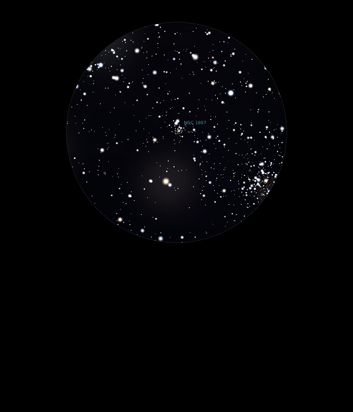

NGC 1907
Open Cluster in Auriga
NGC 1907
Mag 8.2
10/11/13
Very faint
Open Cluster which is fuzzy in 12mm but easy to locate between
HIP 25476 and HIP 25735
Is there a
hint of nebulosity here too?
19/12/14
This Open Cluster is in complete contrast to M38, with whom it
shares the same FOV in 25mm
Tiny and with very faint stars it appears more like a Globular
Cluster
Just resolved in 12mm it is none the less rather neat